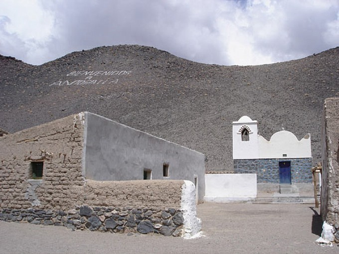
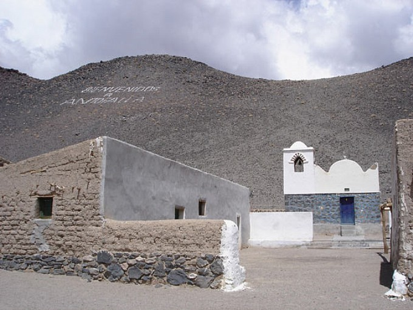

.jpeg)
Antofalla es una comunidad indígena del pueblo Kolla atacameño y comuna del departamento Antofagasta de la Sierra, en el noroeste de la provincia argentina de Catamarca. Se encuentra al pie del volcán con el mismo nombre, el volcán Antofalla.
Su nombre deriva de la lengua nativa Kunza y significa pueblo donde muere el sol. Llegar a él desde Antofagasta de la Sierra implica trepar a las montañas hasta el Abra de los Colorados a 4667 msnm por un camino abierto recién en el año 1989. Antes de llegar a Antofalla se tiene que atravesar el salar previo a tener una vista espectacular del paisaje una vez llegados a la cima de las montañas.
El calendario escolar va desde septiembre a mayo debido a las inclemencias del tiempo que no permiten las clases en el crudo invierno en donde es común tener temperaturas mínimas de -15 o -20 ºC. Se accede a esta localidad por un angosto camino, que parte desde la villa de Antofagasta distante 92 km en dirección noroeste de la capital departamental, superando alturas extremas como La Apacheta, a 4.635 msnm, en el Alto de Calalaste.
Antofalla es un pueblito al pie del Salar y del Volcán del mismo nombre, llegar a el implica trepar a las montañas hasta los 4780 metros de altura por un camino de huella abierto recién en el año 1989 (eso implica que antes de esta fecha estaban totalmente aislados? bueno la verdad es que no lo sabemos, suponemos que si), atravesar el salar previo a tener una vista espectacular del paisaje una vez llegados a la cima de las montañas.
Su callecita principal que pueden observar en dos fotos se llama Soledad.Realmente es un pueblo solitario, su silencio sólo es cortado por el viento que golpetea contra los árboles, un vergel en el medio de tanta blancura, en el medio de tanta desolación. Sus habitantes han ido utilizando técnicas de cultivo en invernaderos y riego en acequias que aprovechan de los deshielos de las altas montañas, de esta manera es que Antofalla tiene tanto verde en el medio de un lugar en que nada crece en forma natural.
A lo lejos se puede divisar en la falda de una montaña un cartel que reza simplemente "Bienvenidos a Antofalla".El pueblo es todo en miniatura, sus casitas son pequeñas y con chimeneas humeantes, su iglesia es la más pequeña que hayamos visto data del año 1963 y no tiene más que tres banquitos.
Villa de Antofalla: Al borde del extenso y angosto salar, y al pie del gigantesco Volcán se halla una pequeña Villa de singular belleza que vive del pastoreo de llamas y ovejas. Se encuentra al Noroeste de la Villa de Antofagasta, es un pequeño poblado de 8 familias que suman unos 60 habitantes. Muy próximo a ella se encuentra un viejo trapiche jesuítico y ruinas de ese asentamiento minero para la extracción del oro.Volcán Antofalla: Tiene una altura de 6.409 m.s.n.m. No posee dificultades técnicas pero si se está propenso a las bajas temperaturas y a los fuertes vientos. El acercamiento hasta el campamento base se puede realizar en un vehículo convencional en 3 hs. y luego partir a un campamento de altura a 4.200 m.s.n.m (1° día). Luego se asciende a los 5.000 mts. Por una suave pendiente sin dificultades (2° día). Desde este campamento se puede conquistar la cumbre y regresar hasta el mismo en casi 7 hs. (3° día). El descenso transcurre por una quebrada hasta la base de la montaña, de donde se regresa a Antofagasta de la Sierra (4° día). También se puede ascender por la ladera Norte en 2 o 3 días, pero el acercamiento transita por una huella apta únicamente para vehículos de doble tracción. Se encuentra distante a unos 35 Km. del poblado, es un importante desafío para los montañistas. Su cima posee un altar ceremonial con una pirámide de piedra en su parte central. En la zona hay baqueanos que prestan apoyo a las expediciones que se realizan para conquistar la cumbre.
Salar de Antofalla: Se trata de un circuito muy variado y de fácil circulación. En este itinerario recorremos quebradas con enormes cantidades de vicuñas y suris, pasando por una altura de 4.600 m.s.n.m. desde la cual se puede apreciar el imponente Volcán de Antofalla de 6.409 m.s.n.m. y después visitar el poblado de Antofalla. Se bordea el Salar hacia el Sur, considerado el más largo del mundo, pasando por géiseres inactivos (pequeñas lagunas de colores), aguas termales en botijuela y sedimentos volcánicos para regresar a Antofagasta por la Quebrada del Diablo.

.jpeg)

.jpeg)

.jpeg) 



Al borde del extenso y angosto salar, y al pie del gigantesco Volcán se halla una pequeña Villa de singular belleza que vive del pastoreo de llamas y ovejas. Se encuentra al Noroeste de la Villa de Antofagasta, es un pequeño poblado de 8 familias que suman unos 60 habitantes. Muy próximo a ella se encuentra un viejo trapiche jesuítico y ruinas de ese asentamiento minero para la extracción del oro.
Tiene una altura de 6.409 m.s.n.m. No posee dificultades técnicas pero si se está propenso a las bajas temperaturas y a los fuertes vientos. El acercamiento hasta el campamento base se puede realizar en un vehículo convencional en 3 hs. y luego partir a un campamento de altura a 4.200 m.s.n.m (1° día). Luego se asciende a los 5.000 mts. Por una suave pendiente sin dificultades (2° día). Desde este campamento se puede conquistar la cumbre y regresar hasta el mismo en casi 7 hs. (3° día). El descenso transcurre por una quebrada hasta la base de la montaña, de donde se regresa a Antofagasta de la Sierra (4° día). También se puede ascender por la ladera Norte en 2 o 3 días, pero el acercamiento transita por una huella apta únicamente para vehículos de doble tracción. Se encuentra distante a unos 35 Km. del poblado, es un importante desafío para los montañistas. Su cima posee un altar ceremonial con una pirámide de piedra en su parte central. En la zona hay baqueanos que prestan apoyo a las expediciones que se realizan para conquistar la cumbre.
Se trata de un circuito muy variado y de fácil circulación. En este itinerario recorremos quebradas con enormes cantidades de vicuñas y suris, pasando por una altura de 4.600 m.s.n.m. desde la cual se puede apreciar el imponente Volcán de Antofalla de 6.409 m.s.n.m. y después visitar el poblado de Antofalla. Se bordea el Salar hacia el Sur, considerado el más largo del mundo, pasando por géiseres inactivos (pequeñas lagunas de colores), aguas termales en botijuela y sedimentos volcánicos para regresar a Antofagasta por la Quebrada del Diablo.
salvamarcos752@gmail.com
+54 9 3834 99-2980